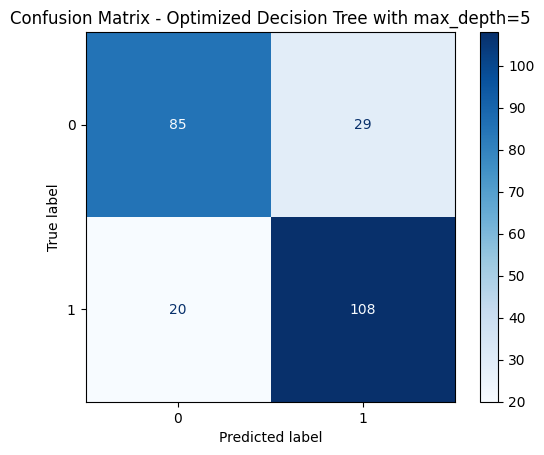

# import required libraries
import pandas as pd
import numpy as np
import matplotlib.pyplot as plt
import seaborn as sns
from sklearn.feature_selection import RFE, mutual_info_classif
from sklearn.ensemble import RandomForestClassifier
from sklearn.linear_model import LogisticRegression
from sklearn.model_selection import train_test_split
from sklearn.preprocessing import StandardScaler
from sklearn.metrics import classification_report, ConfusionMatrixDisplay, accuracy_score
from sklearn.model_selection import GridSearchCV
from sklearn.tree import DecisionTreeClassifier, plot_tree
from sklearn.metrics import roc_curve, auc
Supervised Learning
Instructions
Note: You should remove these instruction once you have read and understood them. They should not be included in your final submission.
Remember: Exactly what do you put on this page will be specific you your project and data. Some things might “make more sense” on one page rather than another, depending on your workflow. Organize your project in a logical way that makes the most sense to you.
Suggested page structure
Here’s one suggested structure for organizing your technical pages. You can adjust this as needed:
Audience:Remember that these are written for a technical audience. Assume they have completed the DSAN program, but would appreciate refreshers of the important concepts.
- Introduction and Motivation: Briefly outline your plan. What are you doing on this page, and why? Provide context and explain the goals of your analysis.
- Overview of Methods: Give a concise explanation of the methods used. For example, if using K-Means clustering, describe what it is, how it works, the inputs and outputs, and key hyperparameters.
- Code: Include the code you used to implement your workflow.
- Summary and Interpretation of Results: Summarize your findings, interpret the results, and discuss their technical implications.
What to address
The following is a list of some of the things you should address on this page. This list is not exhaustive, and you should use your judgment to decide what is most relevant to your project.
Please do some form of “Feature selection” in your project and include a section on it. Discuss the process you went through to select the features that you used in your model, this should be done for both classification models and regression models. What did you include and why? What did you exclude? What was the reasoning behind your decisions? This section can be included here, or you can make a new page in the dropdown menu for it.
Please break this page into a “regression” section, “binary classification” section, and a “Multi-class classification” section. For each case you should try multiple methods, including those discussed in class, and compare and contrast their preformance and results.
Data Preprocessing
- Normalization or Standardization: Apply techniques to scale the data appropriately.
- Feature Selection or Extraction: Identify and select the most relevant features for your analysis.
- Encoding Categorical Variables: Convert categorical variables into a suitable format for modeling.
Model Selection
- Model Rationale: Explain the reasons for selecting specific models or algorithms.
- Overview of Algorithms: Provide a brief overview of the algorithms used
Training and Testing Strategy
- Split Methods: Detail the splitting methods used (e.g., train-test split, cross-validation).
- Dataset Proportions: Specify the proportions used for splitting the dataset.
Model Evaluation Metrics
- Binary Classification Metrics: Discuss metrics such as accuracy, precision, recall, F1 score, and ROC-AUC.
- Multiclass Classification Metrics: Include metrics such as confusion matrix and macro/micro F1 score.
- Regression Metrics: Explain metrics such as RMSE, MAE, and R-squared, parity plots, etc.
Results
- Model Performance Summary: Provide a summary of the model’s performance.
- Visualizations: Include visualizations of results (e.g., ROC curves, feature importance plots).
Discussion
- Result Interpretation: Interpret the results obtained from the analysis.
- Model Performance Comparison: Compare the performance of different models.
- Insights Gained: Share insights learned from the analysis.
Code
Provide the source code used for this section of the project here.
If you’re using a package for code organization, you can import it at this point. However, make sure that the actual workflow steps—including data processing, analysis, and other key tasks—are conducted and clearly demonstrated on this page. The goal is to show the technical flow of your project, highlighting how the code is executed to achieve your results.
If relevant, link to additional documentation or external references that explain any complex components. This section should give readers a clear view of how the project is implemented from a technical perspective.
Remember, this page is a technical narrative, NOT just a notebook with a collection of code cells, include in-line Prose, to describe what is going on.
Feature Selection
# Define the binary target variable
df = pd.read_csv("../../data/processed-data/pitstop_with_positions.csv")
df['points_category'] = df['position'].apply(lambda x: 1 if x <= 10 else 0)df.head()| Unnamed: 0 | Year | Round | RaceName | DriverID | Lap1 | Lap2 | Lap3 | Lap4 | Lap5 | ... | Duration2 | Duration3 | Duration4 | Duration5 | Duration6 | Duration7 | constructorName | position | grid | points_category | |
|---|---|---|---|---|---|---|---|---|---|---|---|---|---|---|---|---|---|---|---|---|---|
| 0 | 0 | 2011 | 1 | Australian Grand Prix | alguersuari | -1.492522 | -0.208201 | 1.339923 | -0.281099 | -0.15023 | ... | 0.733521 | 1.882538 | -0.277274 | -0.130754 | -0.060017 | -0.01976 | AlphaTauri | 11.0 | 12.0 | 0 |
| 1 | 1 | 2011 | 1 | Australian Grand Prix | alonso | -0.414215 | 0.355923 | 1.723412 | -0.281099 | -0.15023 | ... | 0.755727 | 1.679973 | -0.277274 | -0.130754 | -0.060017 | -0.01976 | Ferrari | 4.0 | 5.0 | 1 |
| 2 | 2 | 2011 | 1 | Australian Grand Prix | ambrosio | -0.218159 | 0.976458 | -0.577525 | -0.281099 | -0.15023 | ... | 0.896614 | -0.580401 | -0.277274 | -0.130754 | -0.060017 | -0.01976 | Marussia | 14.0 | 22.0 | 0 |
| 3 | 3 | 2011 | 1 | Australian Grand Prix | barrichello | -0.316187 | 0.130273 | 0.956433 | 3.039918 | -0.15023 | ... | 1.835036 | 0.998617 | 3.860649 | -0.130754 | -0.060017 | -0.01976 | Williams | 16.0 | 17.0 | 0 |
| 4 | 4 | 2011 | 1 | Australian Grand Prix | buemi | -0.120131 | 0.468747 | -0.577525 | -0.281099 | -0.15023 | ... | 0.621420 | -0.580401 | -0.277274 | -0.130754 | -0.060017 | -0.01976 | AlphaTauri | 8.0 | 10.0 | 1 |
5 rows × 37 columns
# Define features and target
features = [
"Year",
"Lap1", "Lap2", "Lap3", "Lap4", "Lap5",
"Stop1", "Stop2", "Stop3", "Stop4", "Stop5",
"Duration1", "Duration2", "Duration3", "Duration4", "Duration5",
"Duration6", "Duration7", "grid"
]
X = df[features]
y = df["points_category"] # 1. Correlation Analysis
plt.figure(figsize=(10, 6))
correlations = X.corrwith(y)
correlations.sort_values().plot(kind='barh', color='deepskyblue')
plt.title("Correlation Between Features and Target")
plt.yticks(fontsize=14)
plt.xticks(fontsize=14)
plt.xlabel("Correlation Coefficient", fontsize=14)
plt.ylabel("Feature", fontsize=14)
plt.grid(axis='x')
plt.show()# 2. Recursive Feature Elimination (RFE)
model = LogisticRegression(max_iter=1000, random_state=42)
rfe = RFE(model, n_features_to_select=10)
rfe.fit(X, y)
rfe_ranking = pd.Series(rfe.ranking_, index=features).sort_values()
plt.figure(figsize=(10, 6))
rfe_ranking.plot(kind='barh', color='deepskyblue')
plt.title("Feature Importance by Recursive Feature Elimination (RFE)", fontsize=14)
plt.yticks(fontsize=14)
plt.xticks(fontsize=14)
plt.xlabel("RFE Ranking (Lower is Better)", fontsize=14)
plt.ylabel("Feature", fontsize=14)
plt.grid(axis='x')
plt.show()# 3. Mutual Information
mutual_info = mutual_info_classif(X, y, random_state=42)
mutual_info_series = pd.Series(mutual_info, index=features).sort_values(ascending=False)
plt.figure(figsize=(10, 6))
mutual_info_series.plot(kind='barh', color='deepskyblue')
plt.title("Feature Importance by Mutual Information", fontsize=14)
plt.yticks(fontsize=14)
plt.xticks(fontsize=14)
plt.ylabel("Feature", fontsize=14)
plt.xlabel("Mutual Information Score", fontsize=14)
plt.grid(axis='x')
plt.show()
features: grid, Year, Duration1, Duration2, Duration3, Duration4, Lap1, Lap2, Lap3, Stop2
df_transformed = pd.read_csv("../../data/processed-data/pitstop_with_positions.csv")
df_transformed['points_category'] = df_transformed['position'].apply(lambda x: 1 if x <= 10 else 0)
X = df_transformed[['grid', 'Year', 'Duration1', 'Duration2', 'Duration3', 'Duration4', 'Lap1', 'Lap2', 'Lap3', 'Stop2', 'Stop3', 'Stop4']]
y = df_transformed['points_category']
# Train-test split
X_train, X_test, y_train, y_test = train_test_split(X, y, test_size=0.2, random_state=123, stratify=y)# Initialize Random Forest Classifier
rf = RandomForestClassifier(random_state=42)
# Train the model
rf.fit(X_train, y_train)
# Predict
y_pred = rf.predict(X_test)
# Evaluation Metrics
print("Classification Report:")
print(classification_report(y_test, y_pred))
# Confusion Matrix
ConfusionMatrixDisplay.from_estimator(rf, X_test, y_test, cmap="Blues")
plt.title("Confusion Matrix - Random Forest")
plt.show()
# Accuracy Score
print("Accuracy:", accuracy_score(y_test, y_pred))Classification Report:
precision recall f1-score support
0 0.78 0.78 0.78 114
1 0.80 0.80 0.80 128
accuracy 0.79 242
macro avg 0.79 0.79 0.79 242
weighted avg 0.79 0.79 0.79 242
Accuracy: 0.7933884297520661# Define hyperparameters
param_grid = {
'n_estimators': [50, 100, 200],
'max_depth': [None, 10, 20, 30],
'min_samples_split': [2, 5, 10]
}
# Perform Grid Search
grid_search = GridSearchCV(estimator=RandomForestClassifier(random_state=42),
param_grid=param_grid, cv=5, scoring='accuracy')
grid_search.fit(X_train, y_train)
# Best parameters
print("Best Parameters:", grid_search.best_params_)
# Evaluate with best parameters
best_rf = grid_search.best_estimator_
y_pred_best = best_rf.predict(X_test)
# Classification Report
print("Classification Report - Optimized Random Forest:")
print(classification_report(y_test, y_pred_best))Best Parameters: {'max_depth': 20, 'min_samples_split': 5, 'n_estimators': 200}
Classification Report - Optimized Random Forest:
precision recall f1-score support
0 0.79 0.76 0.78 114
1 0.80 0.82 0.81 128
accuracy 0.79 242
macro avg 0.79 0.79 0.79 242
weighted avg 0.79 0.79 0.79 242
# decision tree
X = df_transformed[['grid', 'Year', 'Duration1', 'Duration2', 'Duration3', 'Duration4', 'Lap1', 'Lap2', 'Lap3', 'Stop2', 'Stop3', 'Stop4']]
y = df_transformed['points_category']
# Train-test split
X_train, X_test, y_train, y_test = train_test_split(X, y, test_size=0.2, random_state=123, stratify=y)# Initialize the Decision Tree Classifier
dt = DecisionTreeClassifier(random_state=42)
# Fit the model
dt.fit(X_train, y_train)
# Predict on test set
y_pred = dt.predict(X_test)
# Evaluation Metrics
print("Classification Report - Decision Tree:")
print(classification_report(y_test, y_pred))
# Confusion Matrix
ConfusionMatrixDisplay.from_estimator(dt, X_test, y_test, cmap="Blues")
plt.title("Confusion Matrix - Decision Tree")
plt.show()Classification Report - Decision Tree:
precision recall f1-score support
0 0.68 0.75 0.72 114
1 0.76 0.69 0.72 128
accuracy 0.72 242
macro avg 0.72 0.72 0.72 242
weighted avg 0.72 0.72 0.72 242

# Define the parameter grid
param_grid = {
'max_depth': range(1, 21),
'min_samples_split': [2, 5, 10],
'min_samples_leaf': [1, 2, 5]
}
# Perform Grid Search
grid_search = GridSearchCV(DecisionTreeClassifier(random_state=42), param_grid, cv=5, scoring='accuracy')
grid_search.fit(X_train, y_train)
# Best parameters
print("Best Parameters:", grid_search.best_params_)
# Evaluate the best model
best_dt = grid_search.best_estimator_
y_pred_best = best_dt.predict(X_test)
# Evaluation Metrics for Best Model
print("Classification Report - Optimized Decision Tree:")
print(classification_report(y_test, y_pred_best))
# Confusion Matrix
ConfusionMatrixDisplay.from_estimator(best_dt, X_test, y_test, cmap="Blues")
plt.title("Confusion Matrix - Optimized Decision Tree")
plt.show()Best Parameters: {'max_depth': 3, 'min_samples_leaf': 1, 'min_samples_split': 2}
Classification Report - Optimized Decision Tree:
precision recall f1-score support
0 0.76 0.78 0.77 114
1 0.80 0.78 0.79 128
accuracy 0.78 242
macro avg 0.78 0.78 0.78 242
weighted avg 0.78 0.78 0.78 242
# Map the labels to numeric values
# ROC Curve for the Initial Decision Tree
y_proba_initial = dt.predict_proba(X_test)[:, 1] # Probability for the positive class
fpr_initial, tpr_initial, _ = roc_curve(y_test, y_proba_initial)
roc_auc_initial = auc(fpr_initial, tpr_initial)
# ROC Curve for the Optimized Decision Tree
y_proba_optimized = best_dt.predict_proba(X_test)[:, 1] # Probability for the positive class
fpr_optimized, tpr_optimized, _ = roc_curve(y_test, y_proba_optimized)
roc_auc_optimized = auc(fpr_optimized, tpr_optimized)
# Plot both ROC curves
plt.figure(figsize=(10, 6))
plt.plot(fpr_initial, tpr_initial, label=f'Initial Decision Tree (AUC = {roc_auc_initial:.2f})', color='deepskyblue', lw=2)
plt.plot(fpr_optimized, tpr_optimized, label=f'Optimized Decision Tree (AUC = {roc_auc_optimized:.2f})', color='blue', lw=2)
plt.plot([0, 1], [0, 1], color='gray', linestyle='--', lw=1)
plt.xlabel('False Positive Rate')
plt.ylabel('True Positive Rate')
plt.title('ROC Curves - Decision Tree')
plt.legend(loc="lower right")
plt.show()